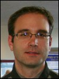
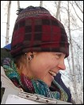
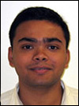
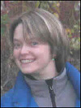
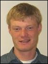
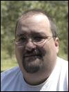
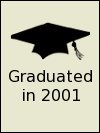

Matthew Balazs: completed a Ph.D. in Geology with an emphasis in remote sensing in 2021. His research involved applying structure from motion on low-cost high-resolution aerial data data to map landslide hazards. He used immersive virtual reality and field data to improve mapping areas of mass movement. He also generated a time-series of DEMs and used a DEM of difference techniques to study redistribution of sediments in parts of Seward and Whittier in Southcentral Alaska. Matthew was co-supervised by Dr. Gabriel Wolken.
Patrick Graham: completed his Masters degree in geology in 2020. His thesis focused on airborne hyperspectral imaging for wetland mapping in the Yukon Flats, Alaska. Patrick was instrumental in getting the HYSPEX instrument commissioned in both field based and airborne configurations. Patrick was co-supervised by Jordi Cristóbal and Rudi Gens, Mark Bertram and Nikki Guldager served on his advisory committee. His research was supported by US Fish and Wildlife Service, NASA Space Grant and NSF EPSCoR.
 Chris Waigl: completed a Ph.D. in 2018 focused on using remote sensing for investigating different aspects of forest fires in interior Alaska. She used visible and infrared imagery from satellite and airborne platforms, to to map, monitor and model fire behavior. She received the NASA Earth System Science Education Fellowship and her graduate advisory committee included Martin Stuefer, Anupma Prakash, and Charles Ichoku.
Chris Waigl: completed a Ph.D. in 2018 focused on using remote sensing for investigating different aspects of forest fires in interior Alaska. She used visible and infrared imagery from satellite and airborne platforms, to to map, monitor and model fire behavior. She received the NASA Earth System Science Education Fellowship and her graduate advisory committee included Martin Stuefer, Anupma Prakash, and Charles Ichoku.
 Stephanie Meggers: completed a Masters degree in fisheries in 2019. She used remote sensing to study adult Chinook habitat in the Togiak watershed in south-west Alaska. She correlated specific habitat elements and the fish abundance as measured from fisheries field data that she collected. Steph interacted with local community members and elders who shared that there were large swings in the abundance and distribution of the fish population in the study area. Steph was co-advised by Dr. Andrew Seitz.
Stephanie Meggers: completed a Masters degree in fisheries in 2019. She used remote sensing to study adult Chinook habitat in the Togiak watershed in south-west Alaska. She correlated specific habitat elements and the fish abundance as measured from fisheries field data that she collected. Steph interacted with local community members and elders who shared that there were large swings in the abundance and distribution of the fish population in the study area. Steph was co-advised by Dr. Andrew Seitz.
 Josh Paul: completed an Interdisciplinary Masters in permafrost soils and remote sensing in 2017. He used a combination of multispectral satellite imagery and terrain derivatives to perform digital soil mapping of remote landscapes in Alaska. Josh developed digital soil mapping techniques specific to permafrost soils and applied these techniques to a pilot study in Arctic Alaska along the Dalton Highway corridor. Derived maps were validated with field data. His advisory committee included Dr. Anupma Prakash and Dr. Chien-Lu Ping.
Josh Paul: completed an Interdisciplinary Masters in permafrost soils and remote sensing in 2017. He used a combination of multispectral satellite imagery and terrain derivatives to perform digital soil mapping of remote landscapes in Alaska. Josh developed digital soil mapping techniques specific to permafrost soils and applied these techniques to a pilot study in Arctic Alaska along the Dalton Highway corridor. Derived maps were validated with field data. His advisory committee included Dr. Anupma Prakash and Dr. Chien-Lu Ping.
 Jacob Rosenthal: completed a Masters degree in Geology. He studied fracture intensities and the tectonic development of fractures in the middle and upper Jurassic strata of the Cook Inlet basin. The goal of his research was to outline a sequential deformation history for the region and to better understand what parameters control fracture density in sedimentary rocks. This research helped to ascertain the role that fractures play in the resource potential of the Cook Inlet forearc basin. Jacob was majorly advised by Dr. Elisabeth Nadin.
Jacob Rosenthal: completed a Masters degree in Geology. He studied fracture intensities and the tectonic development of fractures in the middle and upper Jurassic strata of the Cook Inlet basin. The goal of his research was to outline a sequential deformation history for the region and to better understand what parameters control fracture density in sedimentary rocks. This research helped to ascertain the role that fractures play in the resource potential of the Cook Inlet forearc basin. Jacob was majorly advised by Dr. Elisabeth Nadin.
 Erin Trochim: completed her interdisciplinary Ph.D. in remote sensing hydrology in Fall 2015 and was co-advised by Doug Kane. Erin was a recipient of the NASA Earth System Science Student Fellowship and was also supported by the UAF Graduate School. Erin characterized water tracks in the Imnavait Basin in Arctic Alaska. Her PhD research resulted in 3 peer-reviewed publications and several conference presentations. The presentation at the circumpolar remote sensing conference fetched her the best poster award.
Erin Trochim: completed her interdisciplinary Ph.D. in remote sensing hydrology in Fall 2015 and was co-advised by Doug Kane. Erin was a recipient of the NASA Earth System Science Student Fellowship and was also supported by the UAF Graduate School. Erin characterized water tracks in the Imnavait Basin in Arctic Alaska. Her PhD research resulted in 3 peer-reviewed publications and several conference presentations. The presentation at the circumpolar remote sensing conference fetched her the best poster award.

Derek Starkenburg: completed a PhD in atmospheric science in summer 2015. His research spanned the areas of micrometeorology, remote sensing and hydrology and was funded through a NASA project for mapping and monitoring evapotranspiration in interior Alaska. Derek was co-advised by Javier Fochesatto and had Jordi Cristobal, Rudiger Gens, and Doug Kane as his committee members. He was passionate about science education and continued with post-doctoral research in science data visualization at University of Michigan.
 Joshua (Josh) Miller: completed an MSc in Geology in Fall 2013. Josh developed a subsurface geologic model for the Pilgrim geothermal resource near Nome, Alaska. He also travelled to Iceland to learn about alternate energy policy. After graduation, he started working as a geologist with BP Alaska. Josh loves to explore new research ideas, be out in the field, and take on leadership roles. He is also passionate about photography and has a rich collection of photographs of Alaska landscapes.
Joshua (Josh) Miller: completed an MSc in Geology in Fall 2013. Josh developed a subsurface geologic model for the Pilgrim geothermal resource near Nome, Alaska. He also travelled to Iceland to learn about alternate energy policy. After graduation, he started working as a geologist with BP Alaska. Josh loves to explore new research ideas, be out in the field, and take on leadership roles. He is also passionate about photography and has a rich collection of photographs of Alaska landscapes.
 Arvind Chittambakkam: graduated in summer 2013 with a Masters degree in Geophysics. His research was focused on 'Development of Reservoir Stimulation Model at Pilgrim Hot Springs Using TOUGH2' and was funded by the Department of Energy and Alaska Energy Authority, as part of a larger grant to ACEP for developing innovative techniques in geothermal exploration. Arvind was co-advised by Ronni Daanen.
Arvind Chittambakkam: graduated in summer 2013 with a Masters degree in Geophysics. His research was focused on 'Development of Reservoir Stimulation Model at Pilgrim Hot Springs Using TOUGH2' and was funded by the Department of Energy and Alaska Energy Authority, as part of a larger grant to ACEP for developing innovative techniques in geothermal exploration. Arvind was co-advised by Ronni Daanen.
 Angie Floyd: completed her Masters in Geology in Fall 2012. Her thesis was titled 'Applicability of Synthetic Aperture Radar for Investigating River Ice Breakup on the Kuparuk River, Northern Alaska'. Angie was jointly supported by UAF Dept of Geology & Geophysics and UA Scenario Network and Planning (SNAP) program.
Angie Floyd: completed her Masters in Geology in Fall 2012. Her thesis was titled 'Applicability of Synthetic Aperture Radar for Investigating River Ice Breakup on the Kuparuk River, Northern Alaska'. Angie was jointly supported by UAF Dept of Geology & Geophysics and UA Scenario Network and Planning (SNAP) program.
 Kate Schaefer: completed an interdisciplinary Masters thesis in GIS and Emergency Management Services. Kate used network analysis in ArcGIS for route planning. She developed emergency evacuation scenarios and compiled a map book for emergency responders where pertinent information (eg nearest evacuation point, time for evacuation) is displayed for each locality in the Fairbanks North Star Borough (FNSB). Her research was partly funded by the FNSB and partly by NSFs GK12 program.
Kate Schaefer: completed an interdisciplinary Masters thesis in GIS and Emergency Management Services. Kate used network analysis in ArcGIS for route planning. She developed emergency evacuation scenarios and compiled a map book for emergency responders where pertinent information (eg nearest evacuation point, time for evacuation) is displayed for each locality in the Fairbanks North Star Borough (FNSB). Her research was partly funded by the FNSB and partly by NSFs GK12 program.

Lila Tauzer: started with an interdisciplinary Masters degree in remote sensing and Arctic biology but later switched to s atraight Biology degree with Dr. Abby Powell. Lila used archived aerial photos and satellite images for parts of Fairbanks, Alaska, to map local habitat changes. She collected data on bird species inhabiting this area in winter and summer time to compare with similar data collected in the early 70s. Her project was jointly funded by the Alaska Space Grant Program (ASGP), the Alaska Bird Observatory (ABO), and other UAF resources.
 Jason Stolarski: completed a Ph.D. in fisheries remote sensing being co-advised initially by Joe Margraph, and later by Trent Sutton. He studied the thermal habitat of Dolly Varden, a fish specie that is abundant in the coastal waters of Arctic Alaska. These fish are known to be sensitive to a very specific and small temperature range. Changing temperatures of coastal waters in response to recent climate change may therefore affect the fish health and distribution.
Jason Stolarski: completed a Ph.D. in fisheries remote sensing being co-advised initially by Joe Margraph, and later by Trent Sutton. He studied the thermal habitat of Dolly Varden, a fish specie that is abundant in the coastal waters of Arctic Alaska. These fish are known to be sensitive to a very specific and small temperature range. Changing temperatures of coastal waters in response to recent climate change may therefore affect the fish health and distribution.
Santosh Panda: compled his Ph.D. in geology with emphasis in remote sensing. He used remote sensing and field data to map, model and predict areas of near surface permafrost in the proposed gas pipeline corridor in Alaska. The project was in partnership with the Alaska Division of Geological and Geophysical Surveys (DGGS) and was initiated in partnership with Dr. Diana Solie. Santosh received funding support from DGGS, ASGP and UAFs Department of Geology and Geophysics.

Sudipta Sarkar: completed his Masters degree in 2008. He mapped hydrocarbon anomalies in the Alaska North Slope and proposed a structural model that could potentially explain the surface signatures of selected hydrocarbon sources. His study was funded by the Bureau of Land Management (BLM). Sudipta completed his PhD from University of Southampton, UK, on offshore gas hydrate exploration. His PhD thesis received the Best Geophysics Thesis Award from the Royal Astronomical Society.

Kristin Papp: completed her Masters degree in early 2008. Her research on integrated analysis of permafrost features, gas seeps, gas hydrate and geologic structures around the Eileen fault zone, southwest of Prudhoe bay, Alaska, was funded by the Bureau of Land Management (BLM). Besides proposing models of hydrocarbon seepage to teh surface, Kristin used elevation and vegetation anomaly data for detailed mapping of pingos (ice core mounds) in her study area.

Jeff Green: graduated in 2007 with a Masters degree in geophysics and an emphasis in remote sensing. His research, that was started under the supervision of my former colleague Claude Duguay, involved assessment and improvement of passive microwave snow retrieval algorithms in an Arctic lake-rich region in Alaska North Slope. Jeff currently works for a local geoconsultation company in Fairbanks, Alaska. He is an excellent photographer and occasionally helps out with fieldwork for Arctic research projects.
 Thomas Oommen: graduated in 2006 with an interdisciplinary Masters degree in systems engineering. His research was funded by the Mineral Management Services and he was co-supervised by Debasmita Misra. His thesis involved geodatabase development and GIS based analysis for resource assessment of placer platinum in the offshore region of Goodnews Bay, Alaska. Thomas completed his Ph.D. from Tufts University.
Thomas Oommen: graduated in 2006 with an interdisciplinary Masters degree in systems engineering. His research was funded by the Mineral Management Services and he was co-supervised by Debasmita Misra. His thesis involved geodatabase development and GIS based analysis for resource assessment of placer platinum in the offshore region of Goodnews Bay, Alaska. Thomas completed his Ph.D. from Tufts University.

Antony (Tony) Berthelote: Tony was my first US graduate student who graduated with a Masters degree in Geophysics in 2005. He carried out scaled laboratory experiments to simulate conditions where a heat source, eg coal seam fire or lava tube, was present at depth. He then derived an empirical function to estimate the depths of these linear hot sources using the associated surface temperatures as input. Tony completed his PhD. from University of Montana in 2013.
Jessica Beres: came to UAF from Marshall University (Huntington, West Virginia) in summer 2009 as an undergraduate intern through the ARSC REU program. Later Jessica presented her research results as a poster (Beres J., Prakash A., Gens R., and Mölders N, Comparison of WRF Model Outputs and MODIS Image Products for Cloud Presence for the High Latitudes: A Case Study) at the Annual Meeting of SEDAAG (Knoxville, TN, Nov 2009) and AAG (Washington, DC, Apr 2010).
 Robert (Bob) Mikol: is a geography major who is passionate about geospatial technology and map making. In summer 2008 he worked with me on an ice patch archeology project in Alaska’s Wrangell St. Elias National Park. For the project Bob georeferenced old aerial photos from the early 50s, and U2 color infrared photos from 70s with recent high resolution satellite images to map how ice patches with archeological significance have been shrinking with warming climate. The project lead was Jim Dixon and UAF contact was Will Harrison.
Robert (Bob) Mikol: is a geography major who is passionate about geospatial technology and map making. In summer 2008 he worked with me on an ice patch archeology project in Alaska’s Wrangell St. Elias National Park. For the project Bob georeferenced old aerial photos from the early 50s, and U2 color infrared photos from 70s with recent high resolution satellite images to map how ice patches with archeological significance have been shrinking with warming climate. The project lead was Jim Dixon and UAF contact was Will Harrison.
Eric Burger: came to UAF as an NSF REU intern in summer 2005. I had him involved in using remote sensing data to monitor six decades of thermokarst change in the Barrow region, Alaska. Coming from Georgia, Eric was really excited at the sight of snow (remenant) in summer in Barrow (the northern most place in the US). He also was broave to take a short swim in the cold Arctic waters. He is currently working as an ORISE fellow for the Centers for Disease Control and comleting his graduate degree from Georgia State University.
Stefan Gaston: came to UAF as an NSF REU intern in summer 2004 and worked on using a time series of Synthetic Aperture Radar (SAR) images to track the changes in channel morphology in the Colville River, Alaska. Stefan later graduated with an MSc in Geography from University of California Santa Barbara working on forest structure classification of MODIS image using spectral mixture analysis and topographic normalization.
 Katherine (Katie) Habermas: came to UAF from Florida Institute of Technology as an NSF REU intern in summer 2004. Her interest was to enhance her programming skills in IDL. Katey worked on generating a seamless mosaic of aerial photos of the Alaska North Slope, NPRA region, acquired in 2002 by BLM. As far as I know, Katey continued to complete a masters degree in physics from the Johns Hopkins University.
Katherine (Katie) Habermas: came to UAF from Florida Institute of Technology as an NSF REU intern in summer 2004. Her interest was to enhance her programming skills in IDL. Katey worked on generating a seamless mosaic of aerial photos of the Alaska North Slope, NPRA region, acquired in 2002 by BLM. As far as I know, Katey continued to complete a masters degree in physics from the Johns Hopkins University.
 Christian Nielsen: Christian grew up in Fairbanks, Alaska, and joined me in 2002 as a summer intern right after High School. He worked on an Alaska Space Grant Program funded project and programmed an online educational website called Alaska: A Bird's Eye View. The site passed a rigorous panel review and was approved as a part of tthe NASAs reviewed collection of educational material. Christian moved on to higher academia and is completing his Ph.D. from UCSD studying mechanics of materials, specifically the fracture and healing of polymers and composites.
Christian Nielsen: Christian grew up in Fairbanks, Alaska, and joined me in 2002 as a summer intern right after High School. He worked on an Alaska Space Grant Program funded project and programmed an online educational website called Alaska: A Bird's Eye View. The site passed a rigorous panel review and was approved as a part of tthe NASAs reviewed collection of educational material. Christian moved on to higher academia and is completing his Ph.D. from UCSD studying mechanics of materials, specifically the fracture and healing of polymers and composites.

Chunqiang Wang and Tilahun Kerse: Chunqiang (China) and Tilahun (Ethiopia) both graduated from ITC in 2002. Chunqiang used thermal bands from ASTER and color infrared aerial photos of the Wuda coalfield in China to detect thermal anomalies and associated surface cracks and subsidence zones. Tilahun used hyperspectral DAIS data to map soil salinity in parts of Spain. He also had access to laboratory analysis (soil geochemistry data) for soil samples from the study area for selecting spectral end members.

Christopher Duku, Simon Njuguna, Ebenezer Agyakwabadu, Santa Gilgonzalez, Mulumebet Yigletu, John Baga Arumba: 2001 was a busy year with six students from the batch of geological resource management and environmental geology (GRMEG) program (now a part of the division of Earth systems analysis) graduating at the same time. Their theses were on inter-related topics, all dealing with various aspects of remote predictive mapping in the Tabernas area in Spain .

Kenya Nunez Cambra and Mongontsetseg Baldondarj: were my first graduate students. Their theses were about using remote sensing data and digital image processing techniques in conjunction with field information to update existing geological maps of parts of their country. Kenya's study area was the San Antonio del Sur area in southeast Cuba and Monogon's study area was near Ulambataar, Mongolia. Both Kenya and Mongon work for the national geological survey in their respective countries.